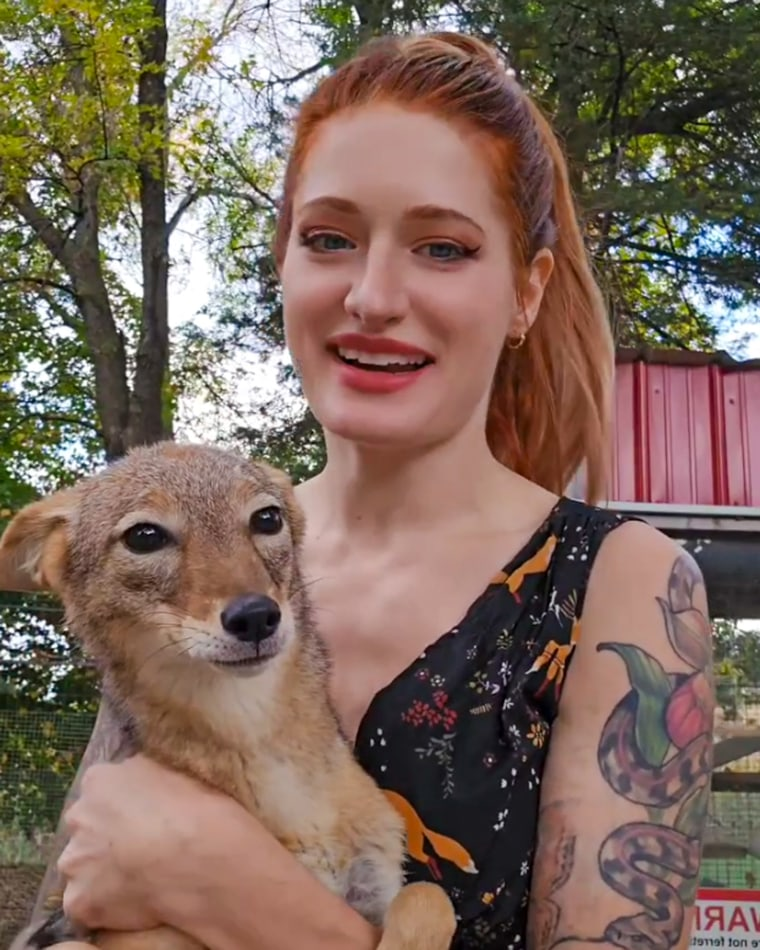

Había una vez un zorro que nació desolado, en un bosque sin propósito y enfermo. Su cuerpo era débil y los primeros meses de su vida fueron una lucha constante por sobrevivir.
Un día, cuando estaba al borde de la muerte, lo encontró una mujer. Era una cuidadora de zorros, de esas personas que dedican su vida entera a sanar animales que otros abandonan o ignoran.
Ella sufría mucho de ansiedad, y encontró un refugio en cuidar animales necesitados. Los zorros eran sus favoritos, así que dedicaba cada momento libre a rescatarlos y rehabilitarlos.
Ella decía que los zorros eran "criaturas incomprendidas" llamadas astutas cuando solo eran supervivientes haciendo lo necesario para vivir. Con el afán de educar a otros, documentaba tu recuperación en redes sociales.
Contigo fue diferente. Te cuidó durante meses, te alimentó cuando no podías comer, te mantuvo caliente cuando tu cuerpo temblaba de fiebre. Te enseñó que un zorro merece elegir su propio destino.
Hoy, después de una larga recuperación, te encuentras frente a una decisión. Estás más fuerte ahora, aunque tu cuerpo aún guarda cicatrices de aquellos días oscuros. Ella te ha traído al borde del bosque, donde la naturaleza salvaje te espera.
"Puedes quedarte conmigo si quieres", te dice con voz suave, "o puedes ir y vivir la vida que mereces tener".